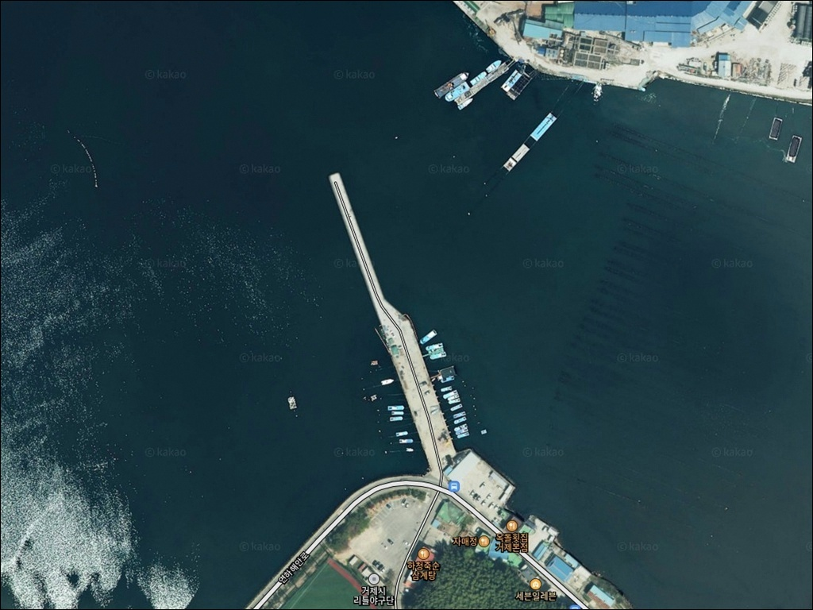
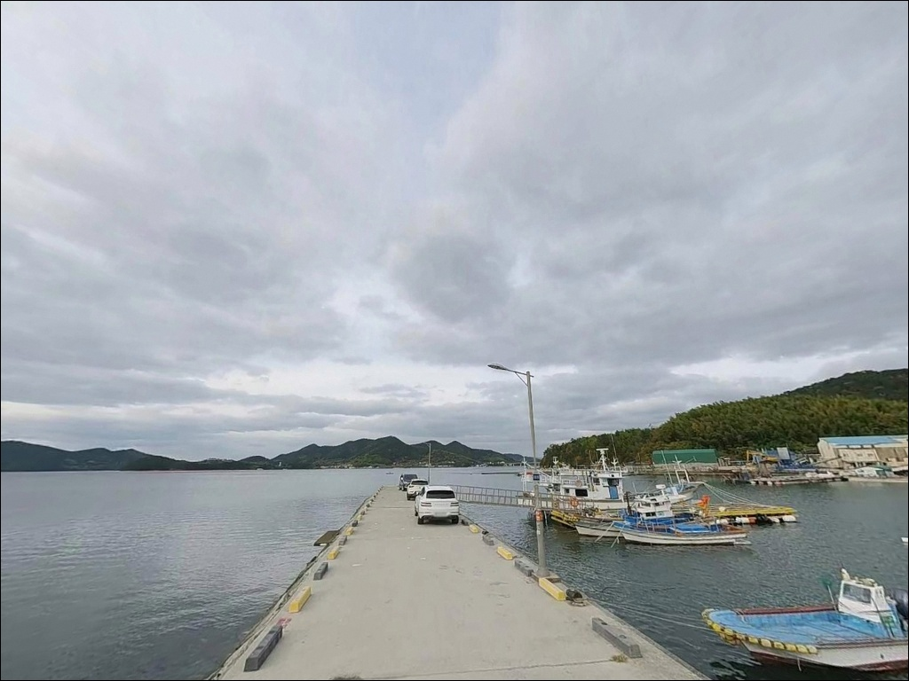
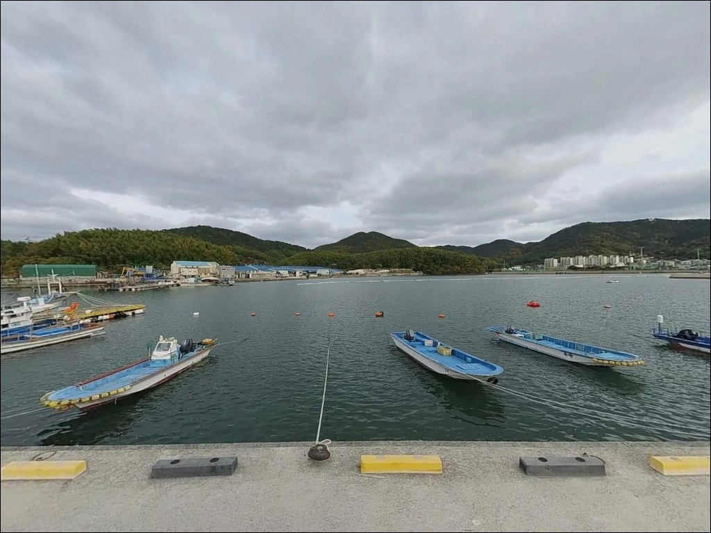
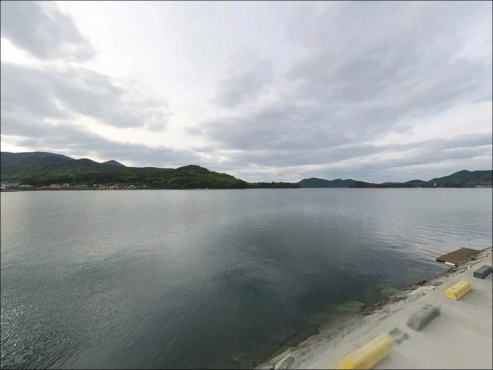
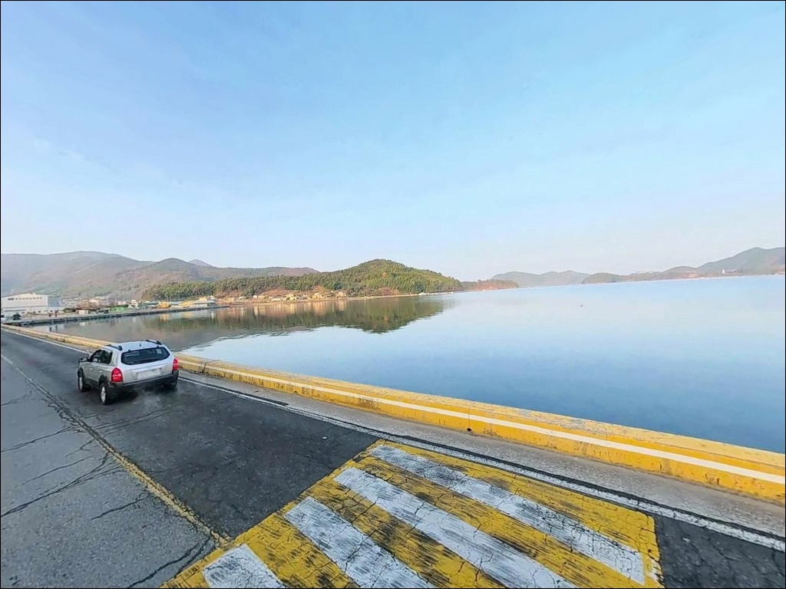
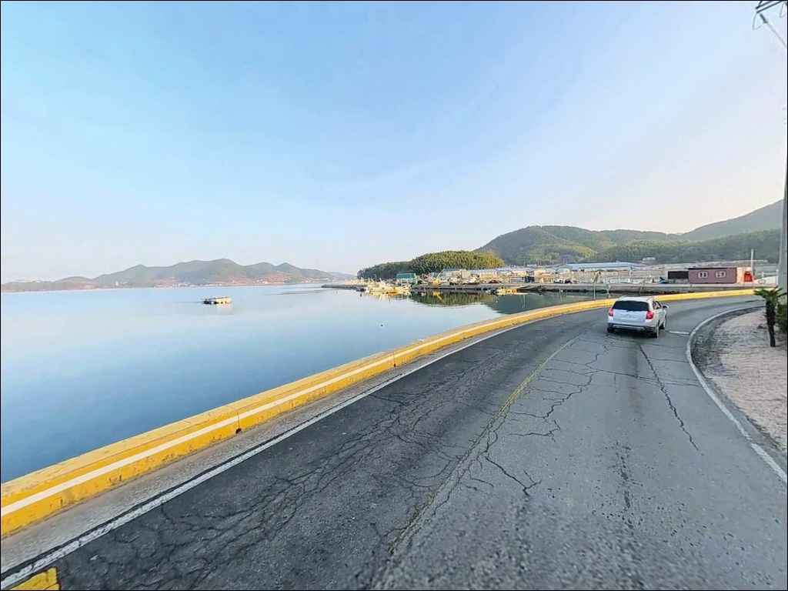
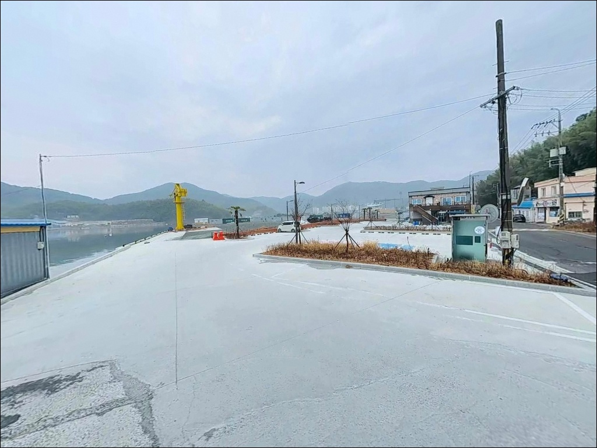
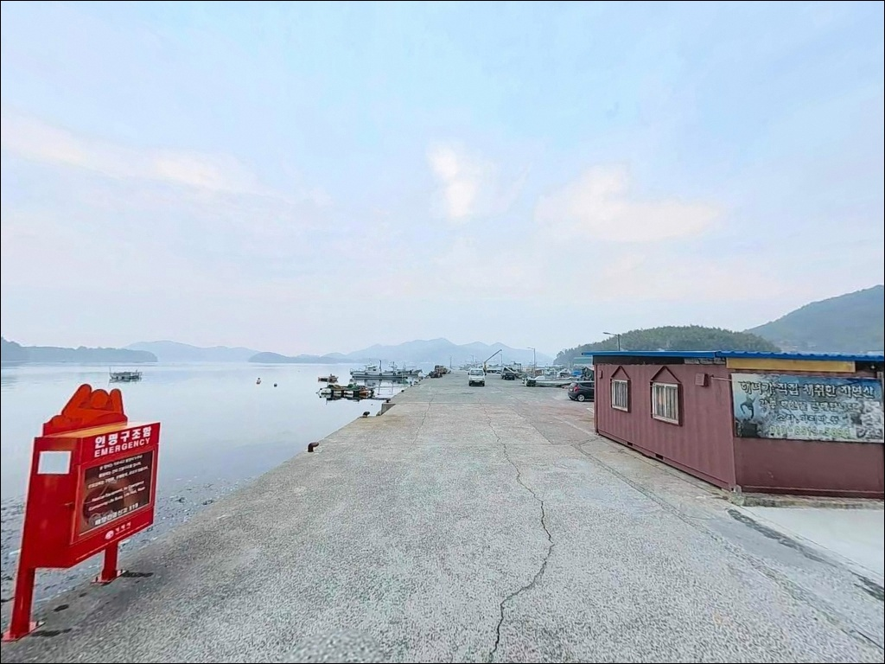
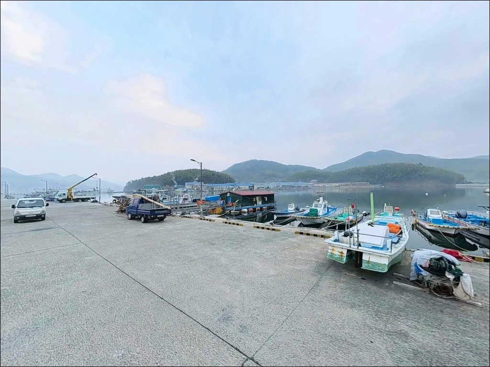

이 페이지에는 광고(제휴 링크 포함)가 있으며, 광고 링크를 통해 구매하면 운영자가 판매 수익 또는 수수료를 받을 수 있습니다. 포인트 사진: 카카오맵 스카이뷰·로드뷰. 이 페이지의 지도·사진 이미지는 카카오맵의 실제 서비스 이미지와 다를 수 있습니다.

하청부두
경남 거제시 하청면 하청리 1239-5
하청부두를 처음 찾는 낚시인이
가장 많이 틀리는 판단은
조류가 약하다는 이유로
물때를 확인하지 않고 진입하는 것입니다.
칠천량 해협은 내만권이지만
밀물·썰물 교차 시 조류 흐름이 발생하며,
이 타이밍을 놓치면
하루 종일 입질 없이 끝나는 경우가 생깁니다.
칠천도와 마주 보는 칠천량 해협 내측에 자리한
하청부두는 1972년 지정된 지방어항으로,
방파제 337m와 물양장 120m로 구성된
중형 부두 구조를 갖추고 있습니다.
부두 공간이 넓고 진입로가 정비되어 있어
낚시와 차박을 동시에 진행하기 좋은
거제 북부의 대표적인 생활낚시 포인트입니다.
이 글은
하청부두의 진입 환경, 낚시 여건, 차박 조건,
주변 편의시설과 대안 포인트를 중심으로 정리합니다.
조황 단정이나 특정 어종 보장은
이 글의 범위에 포함되지 않습니다.

하청부두는 거제북로(칠천로) 방향에서
하청면 소재지를 거쳐 해안 방향으로
짧은 거리만 이동하면 닿는 구조입니다.
진입로 전 구간이 포장되어 있으며
경사나 비포장 구간은 없습니다.
도로 폭은 일반 승용차와 중형 SUV 기준
무리 없이 진입할 수 있는 수준입니다.
부두 내부까지 이어지는 공간이 넓어
회차 스트레스가 적은 편입니다.
주차는 부두 인접 공터와
하청스포츠타운 인근 유휴 공간을
함께 활용할 수 있으며,
대형 캠핑카 기준도 공간 여유가 있는 구조입니다.
다만 어선 계류 동선을 확인하고
작업 구역과 겹치지 않는 자리를 먼저 잡는 것이
기본 순서입니다.
부두 끝단 방향으로 석축 제방이 이어지며,
테트라포드는 설치되지 않은 구조입니다.
발판이 평탄한 콘크리트 구간이 많아
진입 후 이동 동선이 단순한 편입니다.

하청부두는 하청면 소재지와 붙어 있어
완전 고립형 포인트가 아닙니다.
야간에는 부두 구간 가로등이 켜지는 구역이 있어
어둠 속 이동에 크게 불편하지 않습니다.
단, 가로등 밀도는 구간에 따라 다르므로
개인 헤드랜턴은 필수입니다.
내만권 구조 덕분에 파도 소음이 적고
바람 영향도 외해 포인트보다 완화되는 편입니다.
다만 서쪽으로 칠천량 해협 방향이 열려 있어
서풍이 강한 날에는 체감 바람이 올라갑니다.
출발 전 기상청 예보에서
풍향과 풍속을 먼저 확인하고 나서
야박 여부를 결정하는 편이 좋습니다.
민가와 가깝고 어촌 생활권 옆에 위치한 환경이므로
야간 정숙은 기본 매너입니다.
차박을 메인으로 삼을 경우
어선 조업이 이른 새벽부터 시작될 수 있다는 점을
감안하고 자리를 잡아야 합니다.

하청부두에서 하청면 소재지까지는
도보 또는 차량 2~3분 거리입니다.
편의점과 식당, 농협 하나로마트가
1km 이내 생활권 안에 있어
출조 전 부족한 물품을
현장 근처에서 보충할 수 있습니다.
부두 입구 방향으로
낚시 전문점도 위치하고 있어
채비와 미끼 수급도 어렵지 않습니다.
주유소는 하청면 소재지 내에 위치합니다.
반경 3km 안에 칠천량해전공원이 있어
주차 공간과 공중화장실을 추가로
활용할 수 있습니다.
칠천대교를 건너 칠천도 방향으로는
카페와 해수욕장(물안해수욕장) 등
관광 인프라도 갖춰져 있어
가족 동반 방문 시 동선 확장이 가능합니다.
반경 10km 권 내에 거제 고현동 도심이 위치해
대형마트, 병원 등
광역 생활 인프라 접근성도 높은 편입니다.

하청부두 출조 전 첫 번째 확인 사항은
물때입니다.
칠천량 해협은 내만권이지만
남북 방향으로 조류가 흐르는 해협 구조를 가집니다.
들물과 썰물 교차 타이밍에
어종 활성이 높아지는 패턴이 형성되므로,
바다타임에서 하청 기준 물때를 미리 확인하고
입장 시각을 조정하는 것이 기본 전략입니다.
에깅이란 갑오징어·무늬오징어를 대상으로
에기(인조 미끼)를 사용하는 루어낚시 방식입니다.
가을 시즌 에깅 출조라면
주꾸미와 갑오징어 활성 시간대인
이른 아침 또는 해질 무렵 전후를
우선 노리는 것이 유리합니다.
채비 손실을 고려해
여분 에기와 소모품은 넉넉하게 준비합니다.
부두는 어민의 작업 공간이 공존하는 곳입니다.
어선 이동 동선과 어구에 접촉하지 않도록
자리를 잡는 것이 기본 매너이며,
야간에는 구명조끼와 미끄럼 방지 신발을
반드시 착용하고 낚시를 시작해야 합니다.
부두 끝단은 난간이 없는 구간이 있으므로
야간 보행 시 각별한 주의가 필요합니다.

하청부두의 낚시 가능 구간은
크게 두 곳으로 나뉩니다.
방파제 끝단 외측 구간과
물양장 석축 상단 구간입니다.
방파제 끝단 방향은
칠천량 해협 쪽으로 열려 있어
조류 흐름이 직접 닿고
수심도 깊어지는 구조입니다.
원투낚시와 에깅 채비를
해협 방향으로 투척할 때
가장 효율적인 구간입니다.
내항 물양장 쪽은 정박선이 있는 구역으로
수심이 완만하고 바닥 변화가 적습니다.
루어 채비로 구조물 주변을 탐색하거나
가로등 아래 집어 효과를 활용한
야간 생활낚시에 어울리는 구간입니다.
바닥은 주로 펄과 모래 혼합으로 이루어져 있어
밑걸림 걱정 없이 채비를 운영할 수 있습니다.
이 해역에서 기대해 볼 수 있는 어종은
도다리, 보리멸, 붕장어, 볼락,
전갱이, 숭어, 감성돔, 망상어 계열입니다.
가을에는 망둥어와 주꾸미·갑오징어
패턴이 강하게 형성되는 시기입니다.
최신 조황은 출조 전에
하청부두 낚시 또는 칠천량 조황을
검색해 확인해 보시기 바랍니다.

하청부두에서 가장 잘 맞는 낚시는
원투낚시입니다.
내만권 특성상 파도가 잔잔하고
펄·모래 혼합 바닥이 안정적이어서
채비 컨트롤이 용이합니다.
방파제 끝단에서 해협 방향으로 투척하면
도다리·보리멸·붕장어를 노릴 수 있는
바닥 탐색 구간이 형성됩니다.
가을 시즌에는 에깅이 이 포인트의 핵심 장르가 됩니다.
주꾸미와 갑오징어가 회유하는 시기에
부두 벽면과 바닥층을 공략하는 에깅 방식이
잘 맞는 구조입니다.
이른 아침부터 해 뜰 무렵까지
가장 활성이 높은 타이밍이며,
여름~초겨울에 걸쳐 시즌이 이어집니다.
야간에는 가로등 집어 효과를 활용한
루어낚시가 유효합니다.
소형 지그헤드 채비로
물양장 주변 구조물과
정박선 가장자리를 천천히 탐색하면
볼락·전갱이 계열이
반응하는 구간을 찾을 수 있습니다.
릴찌낚시를 즐기는 낚시인이라면
들물 시간대에 외항 방향으로
찌를 흘려 감성돔을 노리는 방식도
칠천량 해역에서 기대해 볼 수 있습니다.

하청부두 여건이 맞지 않을 때
가장 먼저 이동할 대안은
실전방파제입니다.
하청부두에서 약 2.5km 거리로,
칠천대교 직전에 위치한 소형 방파제입니다.
칠천량 수구부에 가까워
조류 영향이 더 강한 구간이 형성되며,
원투낚시와 루어 패턴 모두 유효합니다.
칠천대교를 건너 칠천도로 이동하면
장안마을 방파제(크루즈방파제)에 닿습니다.
하청부두 기준 약 5km 거리이며,
북쪽 석축 구간은 수심 4~5m로
루어와 찌낚시 모두 가능합니다.
남쪽 ㄱ자 석축 구간은
학꽁치와 감성돔 패턴이 알려진 자리입니다.
하청부두와 동일 해역의 내만권이라
계절 어종 패턴도 비슷하게 이어집니다.
약 8km 거리에 있는 장목항은
방파제 구조가 안정적이고
편의시설도 갖춰진 대안 포인트입니다.
차박 중심으로 이동하고 싶을 때는
하청면 연구리에 위치한
옥계오토캠핑장을 대안으로 활용할 수 있습니다.
주차 28면과 전기·화장실·샤워실이 완비된
시설형 캠핑장으로, 사전 예약이 필요합니다.

원투낚시나 에깅을 즐기면서
불편 없는 환경에서 하룻밤 머무르고 싶은 낚시인이라면
하청부두는 잘 맞는 포인트입니다.
편의시설이 가깝고 부두 공간이 넓어
피로도 없이 낚시를 즐길 수 있는 구조입니다.
테트라포드 없이 평탄한 발판이 이어지는 구간이라
짐을 들고 이동하는 데도 부담이 적습니다.
반면 외해의 큰 조류와
갯바위 느낌의 포인트를 원한다면
하청부두 특성과는 방향이 다릅니다.
이 경우 칠천대교를 건너
칠천도 쪽 포인트를 먼저 확인하는 것이 낫습니다.
물때, 편의시설, 진입 여건 세 가지가
모두 갖춰진 편이라,
준비 부담 없이 가볍게 나서기 좋은 포인트입니다.
하청면 소재지 바로 옆에서
칠천량 해협을 바라보며 낚싯대를 드리우고
차 안에서 하룻밤 보내는 여정이라면,
거제 북부에서 이보다 편한 조건을
갖춘 곳은 많지 않습니다.